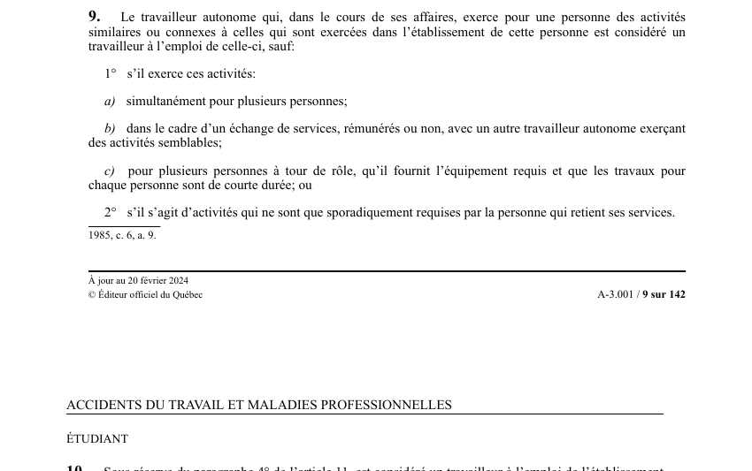

art-9-LATMP : travailleur autonome assimilé à un travailleur
Un article du wiki ⚖️ Recueil législatif
En bref
Le travailleur autonome qui, dans le cours de ses affaires.
- Exerce pour une personne des activités similaires.
- Assimilation au statut de travailleur lorsque les activités sont similaires.
- Exceptions : activités simultanées pour plusieurs personnes.
🌐 LegisQuébec · 📄 PDF officiel (page 9)
Texte officiel : capture du PDF

Toucher l'image pour l'agrandir🔗 Ouvrir a cette page : LATMP.pdf : page 9 · texte a jour au 20 février 2024
Jurisprudence
Décisions du recueil citant cet article (PDF intégré sur chaque fiche) :
Jurisprudence
- Bensimon et Ministère des Anciens Combattants (2020 QCTAT 3279)
- Gendarmerie royale du Canada et De L'Étoile (2018 QCTAT 3511)
- Procureur général du Canada c. De l'Étoile (2019 QCCA 1178)
- Procureur général du Canada c. Tribunal administratif du travail (2018 QCCS 5888)
Voir aussi
- art. 8.1 · faculté : une entente conclue en vertu du premier alinéa de l'article 170 de la Loi sur la santé et la sécurité du travail (chapitre S-2.1) peut prévoir des exceptions aux articles 7 et 8, aux conditions et dans la mesure qu'elle détermine.
- art. 10 · l'étudiant qui, sous la responsabilité de son établissement d'enseignement (centre de services scolaire, commission scolaire, etc.), effectue un stage non rémunéré d'observation ou de travail est considéré comme un travailleur à l'emploi de cet établissement.
- art. 12.1 · 1, Est considérée un travailleur a l'emploi d'un Fonds de soutien à la réinsertion sociale constitué dans un établissement de détention en vertu de l'article 74 de la Loi sur le systéme correctionnel du Québec (chapitre $-40.1).
- ↑ Loi : LATMP
Pages qui pointent ici (15)
- art-10-LATMP : étudiant en stage non rémunéré Recueil législatif
- art-18-LATMP : inscription volontaire à la protection Recueil législatif
- art-310-LATMP : cotisation pour les personnes assimilées Recueil législatif
- art-5-LATMP : location ou prêt de services : employeur Recueil législatif
- art-8.2-LATMP : exclusion des règles pour le travailleur domestique Recueil législatif
- art-8.3-LATMP : travailleur domestique : logement assimilé à un établissement Recueil législatif
- Bénéficiaires de la LATMP Droit du travail
- Bensimon et Ministère des Anciens Combattants Recueil législatif
- Gendarmerie royale du Canada et De L'Étoile Recueil législatif
- Index des décisions : table de travail Recueil législatif
- Index thématique des décisions Recueil législatif
- LATMP : Chapitre I : Application et définitions Recueil législatif
- PDFs de jurisprudence et de doctrine Recueil législatif
- Procureur général du Canada c. De l'Étoile Recueil législatif
- Procureur général du Canada c. Tribunal administratif du travail Recueil législatif